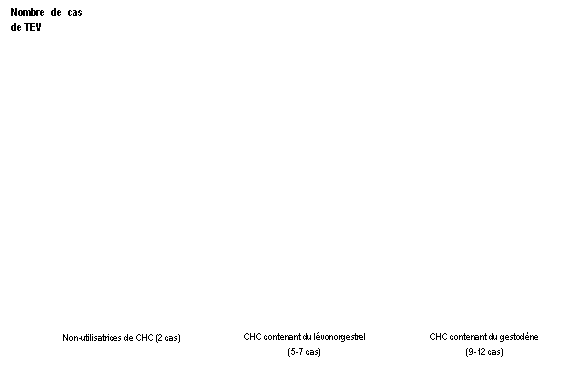

RÉSUMÉ DES CARACTÉRISTIQUES DU PRODUIT
ANSM - Mis à jour le : 10/09/2014
GESTODENE / ETHINYLESTRADIOL GNR 60 microgrammes/15 microgrammes, comprimé pelliculé
2. COMPOSITION QUALITATIVE ET QUANTITATIVE
Gestodène ....................................................................................................................... 60 microgrammes
Ethinylestradiol ................................................................................................................. 15 microgrammes
Pour un comprimé pelliculé jaune pâle (comprimé actif).
Les comprimés pelliculés blancs ne contiennent pas de substances actives (comprimé placebo).
Excipients:
Chaque comprimé pelliculé jaune pâle (comprimé actif) contient 37,3 mg de lactose.
Chaque comprimé pelliculé blanc (comprimé placebo) contient 37,4 mg de lactose.
Pour la liste complète des excipients, voir rubrique 6.1.
Comprimé pelliculé.
Le comprimé actif est un comprimé pelliculé jaune pâle, rond, biconvexe.
Le comprimé placebo est un comprimé pelliculé blanc, rond, biconvexe.
4.1. Indications thérapeutiques
Contraception hormonale orale.
La décision de prescrire GESTODENE ETHINYLESTRADIOL GNR doit être prise en tenant compte des facteurs de risque de la patiente, notamment ses facteurs de risque de thrombo-embolie veineuse (TEV), ainsi que du risque de TEV associé à GESTODENE ETHINYLESTRADIOL GNR en comparaison aux autres CHC (Contraceptifs Hormonaux Combinés) (voir rubriques 4.3 et 4.4).
4.2. Posologie et mode d'administration
Prendre régulièrement et sans oubli 1 comprimé par jour au même moment de la journée, pendant 28 jours consécutifs (1 comprimé jaune pâle actif les 24 premiers jours, 1 comprimé blanc placebo les 4 jours suivants), sans arrêt entre deux plaquettes. Une hémorragie de privation débute habituellement 2 à 3 jours après la prise du dernier comprimé actif et peut se poursuivre après le début de la plaquette suivante.
Début de traitement par GESTODENE / ETHINYLESTRADIOL GNR
Absence de contraception hormonale le mois précédent:
Prendre le 1er comprimé le 1er jour des règles.
Relais d'un autre contraceptif hormonal du type combiné (pilule combinée, anneau intravaginal, dispositif transdermique)
La femme doit commencer à prendre le 1er comprimé de préférence le jour suivant le dernier comprimé actif du contraceptif oral précédent ou au plus tard le jour suivant la période habituelle sans comprimé ou suivant le dernier comprimé placébo du contraceptif oral précédent. Si un anneau intravaginal ou un dispositif transdermique est utilisé, la femme doit commencer la prise de GESTODENE / ETHINYLESTRADIOL GNR de préférence le jour suivant le retrait de l'anneau intravaginal ou du dispositif transdermique ou au plus tard lorsque la prochaine application doit avoir lieu.
Relais d'une contraception progestative (pilule microdosée, injectable, implant) ou d'un dispositif intra-utérin (DIU)
Le relais d'une contraception microdosée peut se faire à tout moment du cycle (le relais d'un implant ou d'un système intra-utérin se fait le jour du retrait; le relais d'un contraceptif injectable se fait le jour prévu pour la nouvelle injection). Dans tous les cas, il est recommandé d'utiliser une méthode complémentaire de contraception non hormonale pendant les 7 premiers jours de traitement.
Après une interruption de grossesse du premier trimestre
Il est possible de débuter GESTODENE / ETHINYLESTRADIOL GNR immédiatement. Il n'est pas nécessaire d'utiliser une méthode complémentaire de contraception.
Après un accouchement ou une interruption de grossesse du deuxième trimestre
Il sera recommandé à la femme de commencer entre 21 et 28 jours après un accouchement ou un avortement au 2e trimestre. Si elle commence plus tard, il lui sera recommandé d'utiliser simultanément une méthode complémentaire de contraception pendant les 7 premiers jours de prise des comprimés. Si elle a déjà eu des rapports sexuels, il faudra s'assurer de l'absence de grossesse avant de commencer à prendre les comprimés ou bien elle devra attendre ses premières règles.
En cas d'allaitement: voir rubrique 4.6.
Cas d'oubli d'un ou de plusieurs comprimés
La sécurité contraceptive peut être diminuée en cas d'oubli portant sur les comprimés jaune pâle et particulièrement si l'oubli porte sur les premiers comprimés de la plaquette.
Si l'oubli d'un comprimé jaune pâle est constaté dans les 12 heures qui suivent l'heure habituelle de la prise, prendre immédiatement le comprimé oublié, et poursuivre le traitement normalement en prenant le comprimé suivant à l'heure habituelle.
Si l'oubli d'un comprimé jaune pâle est constaté plus de 12 heures après l'heure normale de la prise, la sécurité contraceptive n'est plus assurée. Les deux règles de base suivantes s'appliquent en cas d'oubli des comprimés:
1. La prise des comprimés ne doit jamais être interrompue pendant plus de 7 jours.
2. La prise ininterrompue de comprimés pendant 7 jours est requise pour obtenir une inhibition correcte de l'axe hypothalamo-hypophyso-ovarien.
En conséquence, les conseils suivants pourront être donnés dans le cadre de la pratique quotidienne:
Prendre immédiatement le dernier comprimé oublié, même si 2 comprimés doivent être pris le même jour, et poursuivre le traitement contraceptif oral jusqu'à la fin de la plaquette, en utilisant simultanément une autre méthode contraceptive de type mécanique (préservatifs, spermicides, etc.) pendant les 7 jours suivants.
Si des comprimés ont été oubliés lors de la 1ère semaine et en cas de rapports sexuels au cours des 7 jours qui précèdent, la possibilité d'une grossesse doit être envisagée. Plus le nombre de comprimés oubliés est élevé et l'oubli proche de la période de prise des comprimés placebo, plus le risque de grossesse sera élevé.
Si la plaquette en cours contient moins de 7 comprimés jaune pâle, les comprimés placebo de la plaquette en cours doivent être jetés et la plaquette suivante doit être débutée le jour suivant la prise du dernier comprimé actif. Une hémorragie de privation est peu probable avant la prise des comprimés placebo de la seconde plaquette, mais des spottings (gouttes ou taches de sang) ou des métrorragies peuvent être observés.
Si la patiente ne présente pas d'hémorragie de privation à la fin de la seconde plaquette, le risque de grossesse doit être écarté avant de poursuivre le traitement.
L'oubli d'un ou de plusieurs comprimés blanc est sans conséquence, à condition que l'intervalle entre le dernier comprimé jaune pâle de la plaquette en cours et le premier comprimé jaune pâle de la plaquette suivante ne dépasse pas quatre jours.
En cas de troubles gastro-intestinaux
La survenue de troubles digestifs intercurrents dans les 4 heures suivant la prise, tels que vomissements ou diarrhée sévère, peut entraîner une inefficacité transitoire de la méthode par réduction de l'absorption d'hormones et imposer la conduite à tenir préconisée en cas d'oubli de moins de 12 heures. Un comprimé actif d'une autre plaquette devra être pris. Si ces épisodes se répètent sur plusieurs jours, il est alors nécessaire d'associer une méthode contraceptive non hormonale (préservatifs, spermicides, etc.) jusqu'à la reprise de la plaquette suivante.
Les contraceptifs hormonaux combinés (CHC) ne doivent pas être utilisés dans les situations suivantes.
· hypersensibilité aux substances actives ou à l'un des excipients ;
· Présence ou risque de thrombo-embolie artérielle (TEA) :
o Thrombo-embolie artérielle – présence ou antécédents de thrombo-embolie artérielle (p. ex. infarctus du myocarde [IM]) ou de prodromes (p. ex. angine de poitrine).
o Affection cérébrovasculaire – présence ou antécédents d’accident vasculaire cérébral (AVC) ou de prodromes (p. ex. accident ischémique transitoire [AIT]).
o Prédisposition connue, héréditaire ou acquise, à la thrombo-embolie artérielle, telle qu’une hyperhomocystéinémie ou la présence d’anticorps anti-phospholipides (anticorps anti-cardiolipine, anticoagulant lupique).
o Antécédents de migraine avec signes neurologiques focaux.
o Risque élevé de thrombo-embolie artérielle dû à la présence de multiples facteurs de risque (voir rubrique 4.4) ou d’un facteur de risque sévère tel que :
§ diabète avec symptômes vasculaires,
§ hypertension artérielle sévère,
§ dyslipoprotéinémie sévère,
· Présence ou risque de thrombo-embolie veineuse (TEV) :
o Thrombo-embolie veineuse – présence de TEV (patiente traitée par des anticoagulants) ou antécédents de TEV (p. ex. thrombose veineuse profonde [TVP] ou embolie pulmonaire [EP]).
o Prédisposition connue, héréditaire ou acquise, à la thrombo-embolie veineuse, telle qu’une résistance à la protéine C activée (PCa) (y compris une mutation du facteur V de Leiden), un déficit en antithrombine III, un déficit en protéine C, un déficit en protéine S.
o Intervention chirurgicale majeure avec immobilisation prolongée (voir rubrique 4.4).
o Risque élevé de thrombo-embolie veineuse dû à la présence de multiples facteurs de risque (voir rubrique 4.4).
· Affection hépatique sévère ou antécédent d'affection hépatique, en l'absence de normalisation des tests fonctionnels hépatiques ;
· Tumeurs hépatique (bénigne ou maligne) évolutive ou ancienne ;
· Pancréatite ou antécédent de pancréatite associée à une hypertriglycéridémie sévère ;
· Tumeur maligne hormonodépendante connue ou suspectée (par exemple, des organes génitaux ou du
sein) ;
· Saignements vaginaux d'origine non identifiée.
4.4. Mises en garde spéciales et précautions d'emploi
Si la patiente présente l’un des troubles ou l’un des facteurs de risque mentionnés ci-dessous, la pertinence du traitement par GESTODENE ETHINYLESTRADIOL doit être discutée avec elle.
En cas d’aggravation ou de survenue de l’un de ces troubles ou facteurs de risque, la nécessité d’interrompre l’utilisation de GESTODENE ETHINYLESTRADIOL GNR doit être discutée entre le médecin et la patiente.
Risque de thrombo-embolie veineuse (TEV)
Le risque de TEV est augmenté chez les femmes qui utilisent un contraceptif hormonal combiné (CHC) en comparaison aux femmes qui n’en utilisent pas. Les CHC contenant du lévonorgestrel, du norgestimate ou de la noréthistérone sont associés au risque de TEV le plus faible. Le risque de TEV associé aux autres CHC, tels que GESTODENE ETHINYLESTRADIOL GNR, peut être jusqu’à deux fois plus élevé. La décision d’utiliser tout autre CHC que ceux associés au risque de TEV le plus faible doit être prise uniquement après concertation avec la patiente afin de s’assurer qu’elle comprend le risque de TEV associé à GESTODENE ETHINYLESTRADIOL GNR, l’influence de ses facteurs de risque actuels sur ce risque et le fait que le risque de TEV est maximal pendant la première année d’utilisation. Certaines données indiquent également une augmentation du risque lors de la reprise d’un CHC après une interruption de 4 semaines ou plus.
Parmi les femmes qui n’utilisent pas de CHC et qui ne sont pas enceintes, environ 2 sur 10 000 développeront une TEV sur une période d’un an. Cependant, chez une femme donnée, le risque peut être considérablement plus élevé, selon les facteurs de risque qu’elle présente (voir ci-dessous).
On estime1 que sur 10 000 femmes qui utilisent un CHC contenant du gestodène, 9 à 12 développeront une TEV sur une période d’un an ; ce nombre est à comparer à celui d’environ 62 chez les femmes qui utilisent un CHC contenant du lévonorgestrel.
Dans les deux cas, le nombre de TEV par année est inférieur à celui attendu pendant la grossesse ou en période post-partum.
La TEV peut être fatale dans 1 à 2 % des cas.
1 Ces incidences ont été estimées à partir de l’ensemble des données des études épidémiologiques, en s’appuyant sur les risques relatifs liés aux différents CHC en comparaison aux CHC contenant du lévonorgestrel.
2 Point central de l’intervalle de 5-7 pour 10 000 années-femmes sur la base d’un risque relatif, pour les CHC contenant du lévonorgestrel par rapport à la non-utilisation d’un CHC, d’environ 2,3 à 3,6.
Nombre de cas de TEV pour 10 000 femmes sur une période d’un an

De façon extrêmement rare, des cas de thrombose ont été signalés chez des utilisatrices de CHC dans d’autres vaisseaux sanguins, p. ex. les veines et artères hépatiques, mésentériques, rénales ou rétiniennes.
Facteurs de risque de TEV
Le risque de complications thrombo-emboliques veineuses chez les utilisatrices de CHC peut être considérablement accru si d’autres facteurs de risque sont présents, en particulier si ceux-ci sont multiples (voir le tableau ci-dessous).
GESTODENE ETHINYLESTRADIOL GNR est contre-indiqué chez les femmes présentant de multiples facteurs de risque, ceux-ci les exposant à un risque élevé de thrombose veineuse (voir rubrique 4.3). Lorsqu’une femme présente plus d’un facteur de risque, il est possible que l’augmentation du risque soit supérieure à la somme des risques associés à chaque facteur pris individuellement – dans ce cas, le risque global de TEV doit être pris en compte. Si le rapport bénéfice/risque est jugé défavorable, le CHC ne doit pas être prescrit (voir rubrique 4.3).
Tableau : Facteurs de risque de TEV
|
Facteur de risque |
Commentaire |
|
Obésité (indice de masse corporelle supérieur à 30 kg/m²) |
L’élévation de l’IMC augmente considérablement le risque. Ceci est particulièrement important à prendre en compte si d’autres facteurs de risque sont présents. |
|
Immobilisation prolongée, intervention chirurgicale majeure, toute intervention chirurgicale sur les jambes ou le bassin, neurochirurgie ou traumatisme majeur
Remarque : l’immobilisation temporaire, y compris les trajets aériens > 4 heures, peut également constituer un facteur de risque de TEV, en particulier chez les femmes présentant d’autres facteurs de risque |
Dans ces situations, il est conseillé de suspendre l’utilisation de la pilule (au moins quatre semaines à l’avance en cas de chirurgie programmée) et de ne reprendre le CHC que deux semaines au moins après la complète remobilisation. Une autre méthode de contraception doit être utilisée afin d’éviter une grossesse non désirée. Un traitement anti-thrombotique devra être envisagé si GESTODENE ETHINYLESTRADIOL GNR n’a pas été interrompu à l’avance.
|
|
Antécédents familiaux (thrombo-embolie veineuse survenue dans la fratrie ou chez un parent, en particulier à un âge relativement jeune, c.-à-d. avant 50 ans) |
En cas de prédisposition héréditaire suspectée, la femme devra être adressée à un spécialiste pour avis avant toute décision concernant l’utilisation de CHC |
|
Autres affections médicales associées à la TEV |
Cancer, lupus érythémateux disséminé, syndrome hémolytique et urémique, maladies inflammatoires chroniques intestinales (maladie de Crohn ou rectocolite hémorragique) et drépanocytose |
|
Âge |
En particulier au-delà de 35 ans |
Il n’existe aucun consensus quant au rôle éventuel joué par les varices et les thrombophlébites superficielles dans l’apparition ou la progression d’une thrombose veineuse.
L’augmentation du risque de thrombo-embolie pendant la grossesse, et en particulier pendant les 6 semaines de la période puerpérale, doit être prise en compte (pour des informations concernant « Grossesse et allaitement », voir rubrique 4.6).
Symptômes de TEV (thrombose veineuse profonde et embolie pulmonaire)
Les femmes doivent être informées qu’en cas d’apparition de ces symptômes, elles doivent consulter un médecin en urgence et lui indiquer qu’elles utilisent un CHC. Les symptômes de la thrombose veineuse profonde (TVP) peuvent inclure :
· gonflement unilatéral d’une jambe et/ou d’un pied ou le long d’une veine de la jambe ;
· douleur ou sensibilité dans une jambe, pouvant n’être ressentie qu’en position debout ou lors de la marche ;
· sensation de chaleur, rougeur ou changement de la coloration cutanée de la jambe affectée.
Les symptômes de l’embolie pulmonaire (EP) peuvent inclure :
· apparition soudaine et inexpliquée d’un essoufflement ou d’une accélération de la respiration ;
· toux soudaine, pouvant être associée à une hémoptysie ;
· douleur thoracique aiguë ;
· étourdissements ou sensations vertigineuses sévères ;
· battements cardiaques rapides ou irréguliers.
Certains de ces symptômes (p. ex. « essoufflement », « toux ») ne sont pas spécifiques et peuvent être interprétés à tort comme des signes d’événements plus fréquents ou moins sévères (infections respiratoires, p. ex.).
Les autres signes d’une occlusion vasculaire peuvent inclure : douleur soudaine, gonflement et coloration légèrement bleutée d’une extrémité.
Si l’occlusion se produit dans l’œil, les symptômes peuvent débuter sous la forme d’une vision trouble indolore pouvant évoluer vers une perte de la vision. Dans certains cas, la perte de la vision peut survenir presque immédiatement.
Risque de thrombo-embolie artérielle (TEA)
Des études épidémiologiques ont montré une association entre l’utilisation de CHC et l’augmentation du risque de thrombo-embolie artérielle (infarctus du myocarde) ou d’accident cérébrovasculaire (p. ex. accident ischémique transitoire, AVC). Les événements thrombo-emboliques artériels peuvent être fatals.
Facteurs de risque de TEA
Le risque de complications thrombo-emboliques artérielles ou d’accident cérébrovasculaire chez les utilisatrices de CHC augmente avec la présence de facteurs de risque (voir le tableau). GESTODENE ETHINYLESTRADIOL GNR est contre-indiqué chez les femmes présentant un facteur de risque sévère ou de multiples facteurs de risque de TEA qui les exposent à un risque élevé de thrombose artérielle (voir rubrique 4.3).
Lorsqu’une femme présente plus d’un facteur de risque, il est possible que l’augmentation du risque soit supérieure à la somme des risques associés à chaque facteur pris individuellement – dans ce cas, le risque global doit être pris en compte. Si le rapport bénéfice/risque est jugé défavorable, le CHC ne doit pas être prescrit (voir rubrique 4.3).
Tableau : Facteurs de risque de TEA
|
Facteur de risque |
Commentaire |
|
Âge |
En particulier au-delà de 35 ans |
|
Tabagisme |
Il doit être conseillé aux femmes de ne pas fumer si elles souhaitent utiliser un CHC. Il doit être fortement conseillé aux femmes de plus de 35 ans qui continuent de fumer d’utiliser une méthode de contraception différente. |
|
Hypertension artérielle |
|
|
Obésité (indice de masse corporelle supérieur à 30 kg/m2) |
L’élévation de l’IMC augmente considérablement le risque. Ceci est particulièrement important à prendre en compte chez les femmes présentant d’autres facteurs de risque. |
|
Antécédents familiaux (thrombo-embolie artérielle survenue dans la fratrie ou chez un parent, en particulier à un âge relativement jeune, c.-à-d. avant 50 ans) |
En cas de prédisposition héréditaire suspectée, la femme devra être adressée à un spécialiste pour avis avant toute décision concernant l’utilisation de CHC. |
|
Migraine |
L’accroissement de la fréquence ou de la sévérité des migraines lors de l’utilisation d’un CHC (qui peut être le prodrome d’un événement cérébrovasculaire) peut constituer un motif d’arrêt immédiat du CHC. |
|
Autres affections médicales associées à des événements indésirables vasculaires |
Diabète, hyperhomocystéinémie, valvulopathie cardiaque et fibrillation auriculaire, dyslipoprotéinémie et lupus érythémateux disséminé |
Symptômes de TEA
Les femmes doivent être informées qu’en cas d’apparition de ces symptômes, elles doivent consulter un médecin en urgence et lui indiquer qu’elles utilisent un CHC.
Les symptômes d’un accident cérébrovasculaire peuvent inclure :
· apparition soudaine d’un engourdissement ou d’une faiblesse du visage, d’un bras ou d’une jambe, en particulier d’un côté du corps ;
· apparition soudaine de difficultés à marcher, de sensations vertigineuses, d’une perte d’équilibre ou de coordination ;
· apparition soudaine d’une confusion, de difficultés à parler ou à comprendre ;
· apparition soudaine de difficultés à voir d’un œil ou des deux yeux ;
· céphalée soudaine, sévère ou prolongée, sans cause connue ;
· perte de conscience ou évanouissement avec ou sans crise convulsive.
Des symptômes temporaires suggèrent qu’il s’agit d’un accident ischémique transitoire (AIT).
Les symptômes de l’infarctus du myocarde (IM) peuvent inclure :
· douleur, gêne, pression, lourdeur, sensation d’oppression ou d’encombrement dans la poitrine, le bras ou sous le sternum ;
· sensation de gêne irradiant vers le dos, la mâchoire, la gorge, le bras, l’estomac ;
· sensation d’encombrement, d’indigestion ou de suffocation ;
· transpiration, nausées, vomissements ou sensations vertigineuses ;
· faiblesse, anxiété ou essoufflement extrêmes ;
· battements cardiaques rapides ou irréguliers.
La présence d'un facteur de risque grave ou de plusieurs facteurs de risque de maladie veineuse ou artérielle peut également constituer une contre-indication. La possibilité d'un traitement anticoagulant pourra être envisagée. En cas de survenue d'un symptôme évocateur de thrombose, il sera recommandé aux femmes utilisatrices d'une contraception hormonale combinée de contacter leur médecin. En cas de survenue ou de suspicion de thrombose, la contraception orale doit être interrompue. En raison du potentiel tératogène d'un traitement anti-coagulant par dérivés coumariniques, une autre méthode contraceptive appropriée doit être instaurée.
Les autres affections médicales pouvant entraîner des accidents vasculaires sont: le diabète sucré, le lupus érythémateux disséminé, le syndrome hémolytico-urémique, les entéropathies inflammatoires chroniques (maladie de Crohn et rectocolite hémorragique) et la drépanocytose.
L'augmentation de la fréquence ou de l'intensité des migraines lors d'une contraception hormonale combinée (prodrome éventuel d'un accident vasculaire cérébral) peut justifier l'arrêt immédiat de celle-ci.
Cancers
Certaines études épidémiologiques suggèrent que les contraceptifs hormonaux combinés pourraient être associés à une augmentation du risque de cancer du col de l'utérus chez les utilisatrices de CHC à long terme (> 5 ans). Il n'est cependant pas établi si ces pathologies sont dues à d'autres facteurs comme le comportement sexuel et le papillomavirus virus humain (HPV).
Une méta-analyse de 54 études épidémiologiques a conclu qu'il existe une légère augmentation du risque relatif (RR = 1,24) de cancer du sein chez les femmes sous contraception hormonale combinée. Cette majoration du risque disparaît progressivement au cours des 10 ans qui suivent l'arrêt d'une contraception hormonale combinée.
Le cancer du sein étant rare chez les femmes de moins de 40 ans, le nombre plus élevé de cancers diagnostiqués chez les utilisatrices habituelles ou nouvelles utilisatrices d'une contraception hormonale combinée reste faible par rapport au risque global de cancer du sein.
Il est possible que, chez les utilisatrices de contraception hormonale combinée, cette augmentation du risque soit due à un diagnostic plus précoce du cancer du sein, aux effets biologiques de cette contraception ou à l'association des deux. Les cancers du sein diagnostiqués chez les utilisatrices ont tendance à être moins évolués cliniquement par rapport à ceux diagnostiqués chez des femmes n'en ayant jamais utilisé.
Dans de rares cas, des tumeurs bénignes du foie, et dans de plus rares cas encore, des tumeurs malignes du foie ont été rapportées chez des utilisatrices de contraceptifs oraux.
Dans des cas isolés, ces tumeurs ont conduit à des hémorragies intra-abdominales mettant en jeu le pronostic vital. Chez les femmes sous contraceptifs hormonaux combinés, la survenue de douleurs de la partie supérieure de l'abdomen, d'augmentation du volume du foie ou de signes d'hémorragie intra-abdominale doit faire évoquer une tumeur hépatique.
L'utilisation de contraceptifs hormonaux combinés plus fortement dosés (50 µg éthinylestradiol) diminue le risque de cancer de l'endomètre et de l'ovaire. Ceci demande à être confirmé avec les contraceptifs hormonaux combinés plus faiblement dosés.
Autres pathologies
Chez les femmes atteintes d'hypertriglycéridémie ou ayant des antécédents familiaux d'hypertriglycéridémie, un risque accru de pancréatite peut survenir en cas d'utilisation d'une contraception hormonale combinée.
Une augmentation modérée de la pression artérielle a été observée chez de nombreuses femmes sous contraception hormonale combinée : rarement cliniquement significative. Une interruption immédiate de la contraception hormonale combinée n'est justifiée que dans ces rares cas.
La persistance de chiffres tensionnels élevés ou le non contrôle des chiffres tensionnels par un traitement antihypertenseur chez une femme hypertendue prenant une contraception hormonale combinée doit faire interrompre celle-ci.
Cette contraception pourra éventuellement être reprise après normalisation des chiffres tensionnels par un traitement antihypertenseur.
La survenue ou l'aggravation des pathologies suivantes a été observée au cours de la grossesse ou chez des femmes prenant des contraceptifs hormonale combinée, bien que la responsabilité des estroprogestatifs n'ait pu être établie: ictère et/ou prurit dû à une cholestase, lithiase biliaire, porphyrie, lupus érythémateux disséminé, syndrome hémolytico-urémique, chorée de Sydenham, herpès gestationis, hypoacousie par otosclérose.
Chez les femmes présentant un angioedème héréditaire, les estrogènes exogènes peuvent induire ou aggraver des symptômes d'angioedème.
La survenue d'anomalies hépatiques aiguës ou chroniques peut nécessiter l'arrêt des contraceptifs hormonaux combinés jusqu'à la normalisation des paramètres hépatiques.
La récidive d'un ictère cholestatique et/ou d'un prurit liés à une cholestase survenue au cours d'une grossesse précédente ou de la prise antérieure d'hormones stéroïdiennes doit faire arrêter les contraceptifs hormonaux combinés.
Les contraceptifs hormonaux combinés peuvent avoir un effet sur la résistance périphérique à l'insuline et la tolérance au glucose; il n'est cependant pas obligatoire de modifier le traitement chez des diabétiques utilisant une contraception hormonale combinée faiblement dosée (contenant moins de 0,05 mg d'éthinylestradiol). Les femmes diabétiques doivent cependant être étroitement surveillées, en particulier lors de l'instauration d'une contraception hormonale combinée.
Des cas d'aggravations de dépression endogène, d'épilepsie, de maladie de Crohn et de rectocolite hémorragique ont été observés sous contraceptifs hormonaux combinés.
Un chloasma peut survenir, en particulier chez les femmes ayant des antécédents de chloasma gravidique. Les femmes ayant une prédisposition au chloasma sous contraceptifs hormonaux combinés doivent éviter de s'exposer au soleil ou aux rayons ultra-violets.
Ce médicament contient du lactose. Son utilisation est déconseillée chez les patientes présentant une intolérance au galactose, un déficit en lactase de Lapp ou un syndrome de malabsorption du glucose ou du galactose (maladies héréditaires rares).
Consultation / examen médical
Avant l’instauration ou la reprise d’un traitement par GESTODENE ETHINYLESTRADIOL GNR, une recherche complète des antécédents médicaux (y compris les antécédents familiaux) doit être effectuée et la présence d’une grossesse doit être exclue. La pression artérielle doit être mesurée et un examen physique doit être réalisé, en ayant à l’esprit les contre-indications (voir rubrique 4.3) et les mises en garde (voir rubrique 4.4). Il est important d’attirer l’attention des patientes sur les informations relatives à la thrombose veineuse et artérielle, y compris le risque associé à GESTODENE ETHINYLESTRADIOL GNR comparé à celui associé aux autres CHC, les symptômes de la TEV et de la TEA, les facteurs de risque connus et la conduite à tenir en cas de suspicion de thrombose.
Il doit également être indiqué aux patientes de lire attentivement la notice et de suivre les conseils fournis. La fréquence et la nature des examens doivent être définies sur la base des recommandations en vigueur et adaptées à chaque patiente.
Les patientes doivent être averties que les contraceptifs hormonaux ne protègent pas contre l’infection par le VIH (SIDA) et les autres maladies sexuellement transmissibles.
Diminution de l'efficacité
L'efficacité des CHCs peut être réduite en cas d'oubli de comprimés (voir rubrique 4.2), de vomissements, de diarrhées (voir rubrique 4.2) ou de prise concomitante d'autres médicaments (voir rubrique 4.5).
Troubles du cycle
Des saignements irréguliers (« spottings » ou métrorragies) peuvent survenir sous contraceptifs hormonaux combinés, en particulier au cours des premiers mois. Ces saignements irréguliers seront considérés comme significatifs s'ils persistent après environ 3 cycles.
Si les saignements irréguliers persistent ou surviennent après des cycles réguliers, une recherche étiologique non hormonale doit alors être effectuée; des examens diagnostiques appropriés doivent être pratiqués afin d'exclure une tumeur maligne ou une grossesse. Ces examens peuvent comporter un curetage.
Chez certaines femmes, les hémorragies de privation peuvent ne pas survenir pendant la période de prise des comprimés placebo. Si les CHCs ont été pris conformément aux instructions de la rubrique 4.2, il ne sera pas nécessaire d'arrêter le traitement et il est peu probable que la femme soit enceinte. Toutefois, si les CHCs n'ont pas été pris conformément aux instructions avant l'absence de la première hémorragie de privation ou si deux hémorragies de privation successives ne se produisent pas, il convient de s'assurer de l'absence de grossesse avant de poursuivre cette contraception.
4.5. Interactions avec d'autres médicaments et autres formes d'interactions
Les interactions entre les contraceptifs oraux et d'autres substances peuvent conduire à une diminution des concentrations plasmatiques d'estroprogestatifs.
La diminution des concentrations plasmatiques d'estroprogestatifs peut provoquer une augmentation de l'incidence des saignements irréguliers (« spottings » ou métrorragies) et éventuellement réduire l'efficacité du contraceptif estroprogestatif.
Lors de l'utilisation concomitante des contraceptifs oraux avec des substances pouvant diminuer les concentrations plasmatiques des estroprogestatifs, une méthode de contraception non hormonale doit être associée (par ex. préservatifs ou spermicide) à GESTODENE / ETHINYLESTRADIOL GNR. Chez les femmes prenant un traitement à long terme par ces substances, une autre méthode de contraception que les COCs est recommandée.
Après l'arrêt du traitement par les substances actives diminuant les concentrations plasmatiques des estroprogestatifs, il conviendra de poursuivre l'utilisation d'une méthode de contraception non hormonale pendant au moins 7 jours. Une utilisation plus longue d'une telle méthode peut être envisagée (jusqu'à 28 jours) après l'arrêt de substances ayant conduit à une induction des enzymes microsomales hépatiques, résultant en une diminution des concentrations plasmatiques des estroprogestatifs.
Le retour de l'induction enzymatique à un niveau normal peut prendre plusieurs semaines, en fonction de la vitesse d'élimination et de la puissance de la substance.
Les substances pouvant diminuer les concentrations plasmatiques des estroprogestatifs sont:
· les substances actives induisant des enzymes microsomales hépatiques, telles que la rifampicine, la rifabutine, le phénobarbital et la primidone, la carbamazépine, la phénytoïne, la fosphénytoïne, le bosentan, la griséofulvine, le topiramate, certains inhibiteurs de protéases (ritonavir et nevirapine), le modafinil, le millepertuis (Hypericum perforatum) et potentiellement l'oxcarbazépine.
L'utilisation concomitante de COCs et de lamotrigine a montré une diminution des taux de lamotrigine d'un facteur 2 environ. Cette interaction semble être due à l'estrogène car elle n'apparaît pas lors de l'utilisation de progestatifs seuls. Chez les patientes déjà traitées avec la lamotrigine, une surveillance clinique étroite et un ajustement de la posologie au début et à la fin du traitement par les COC peuvent s'avérer nécessaire. A l'inverse, initier une contraception orale lors de la titration de la lamotrigine doit être évité. Les informations relatives à la prescription de la lamotrigine doivent être consultées.
Effets sur les paramètres de laboratoire
L'utilisation de stéroïdes à visée contraceptive peut influencer le résultat de certains tests de laboratoires tels que les tests fonctionnels hépatiques, thyroïdiens, surrénaliens et rénaux, le taux plasmatique des protéines (porteuses) comme la corticosteroid-binding globulin (CBG) et des fractions lipidiques/lipoprotéiniques, les paramètres du métabolisme glucidique, les paramètres de la coagulation et de la fibrinolyse. Les modifications restent généralement dans les limites de la normale.
Le Résumé des caractéristiques du produit des médicaments prescrits de façon concomitante doit être consulté.
Ce médicament n'est pas indiqué pendant la grossesse.
Toute grossesse doit être exclue avant l'utilisation de GESTODENE / ETHINYLESTRADIOL GNR. En cas de découverte d'une grossesse sous ce médicament, son utilisation doit immédiatement être interrompue.
Cependant, la majorité des études épidémiologiques n'a pas montré d'augmentation du risque tératogène lorsqu'un contraceptif oral combiné a été pris par erreur en début de grossesse.
L’augmentation du risque de TEV en période post-partum doit être prise en compte lors de la reprise de GESTODENE ETHINYLESTRADIOL GNR (voir rubriques 4.2 et 4.4).
Allaitement
En cas d'allaitement, l'utilisation de ce médicament est déconseillée en raison du passage des estroprogestatifs dans le lait maternel.
Si la femme désire allaiter, un autre moyen de contraception doit être proposé.
4.7. Effets sur l'aptitude à conduire des véhicules et à utiliser des machines
Les effets de GESTODENE / ETHINYLESTRADIOL SANDOZ sur la capacité à conduire ou à utiliser des machines n'ont pas été étudiés.
Description de certains effets indésirables particuliers
Une augmentation du risque d'événement thrombotique et thrombo-embolique artériel et veineux, incluant l’infarctus du myocarde, l’AVC, les accidents ischémiques transitoires, la thrombose veineuse et l’embolie pulmonaire, a été observée chez les femmes utilisant des CHC ; ceci est abordé plus en détails en rubrique 4.4.
Lors des essais cliniques, une aménorrhée a été observée chez 15 % des patientes (voir rubrique 4.4). Les effets indésirables les plus fréquemment (> 10%) rapportés par les patientes durant les essais cliniques de phase III et durant le suivi du produit après commercialisation ont été les céphalées incluant les migraines, et les saignements/spottings.
D'autres effets indésirables ont été rapportés au cours de l'utilisation de contraceptifs hormonaux combinés :
|
|
Fréquent |
Peu fréquent |
Rare |
Très Rare |
|
|
≥ 1/100 et < 1/10 |
≥ 1/1 000 et < 1/100 |
≥ 1/10 000 et < 1/1 000 |
< 1/10 000 |
|
Infections et infestations |
Vaginite incluant candidose vaginale |
|
|
|
|
Tumeurs bénignes, malignes et non précisées (incluant kystes et polypes) |
|
|
|
Adénome hépatique et carcinome hépatocellulaire |
|
Affections du système Immunitaire |
|
|
Réactions anaphylactiques/anaphylactoïdes avec de très rares cas d'urticaire, angioœdème, troubles circulatoire et respiratoire sévères |
Exacerbation d'un lupus érythémateux disséminé |
|
Troubles du métabolisme et de la nutrition |
|
Modification de l'appétit (augmentation ou diminution) |
Intolérance au glucose |
Exacerbation d'une porphyrie |
|
Affections psychiatriques |
Modification de l'humeur incluant la dépression, modification de la libido |
|
|
|
|
Affections du système nerveux |
Nervosité, étourdissement |
|
|
Exacerbation d'une chorée |
|
Affections oculaires |
|
|
Irritation par les lentilles de contact |
Névrite optique*, thrombose vasculaire rétinienne |
|
Affections vasculaires |
|
Hypertension |
Thrombo-embolie veineuse Thrombo-embolie artérielle |
|
|
Affections gastro- intestinales |
Nausées, vomissements, douleur abdominale |
Crampes abdominales, ballonnement |
|
Pancréatite |
|
Affections hépatobiliaires |
|
|
Ictère cholestatique |
Lithiase biliaire, cholestase** |
|
Affections de la peau et du tissu sous-cutané |
Acné |
Rashs, chloasma (melasme) avec risque de persistance, hirsutisme, alopécie |
Erythème noueux |
Erythème multiforme |
|
Affections du rein et des voies urinaires |
|
|
|
Syndrome hémolytique urémique |
|
Affections des organes de reproduction et du sein |
Douleur et tension mammaires, sécrétion, dysménorrhée, modification des sécrétions vaginales et des règles, modification d'un ectropion |
|
|
|
|
Troubles généraux et anomalies au site d'administration |
Rétention hydrique/œdème |
|
|
|
|
Investigations |
Modification du poids (augmentation ou diminution) |
Modification des lipides plasmatiques, incluant une hypertriglycéridémie |
|
|
*La névrite optique peut conduire à une perte partielle ou complète de la vue.
*Les contraceptifs oraux estroprogestatifs peuvent aggraver les lithiases biliaires et cholestases existantes.
Déclaration des effets indésirables suspectés
La déclaration des effets indésirables suspectés après autorisation du médicament est importante. Elle permet une surveillance continue du rapport bénéfice/risque du médicament. Les professionnels de santé doivent déclarer tout effet indésirable suspecté via le système national de déclaration : Agence nationale de sécurité du médicament et des produits de santé (ANSM) et réseau des Centres Régionaux de Pharmacovigilance. Site internet : www.ansm.sante.fr.
On n'a pas observé d'effets indésirables graves après la prise de fortes doses de COCs. L'expérience générale acquise avec les COCs montre que les symptômes susceptibles d'apparaître dans un tel cas sont les suivants: nausées, vomissements, et chez les jeunes filles, petits saignements vaginaux. Il n'existe pas d'antidote et le traitement doit être purement symptomatique.
5. PROPRIETES PHARMACOLOGIQUES
5.1. Propriétés pharmacodynamiques
PROGESTATIFS ET ESTROGENES EN ASSOCIATION FIXE.
(Système génito-urinaire et hormones sexuelles),
Code ATC: G03AA10.
Estroprogestatif combiné monophasique.
Indice de Pearl non-corrigé: 0,24 (21 521 cycles), IC 95% [0,04; 0,57].
L'efficacité contraceptive de Gestodène / Ethinylestradiol résulte de trois actions complémentaires:
· au niveau de l'axe hypothalamohypophysaire par inhibition de l'ovulation,
· au niveau de la glaire cervicale qui devient imperméable à la migration des spermatozoïdes,
· au niveau de l'endomètre, qui devient impropre à la nidation.
5.2. Propriétés pharmacocinétiques
ETHINYLESTRADIOL
Absorption
Administré par voie orale, l'éthinylestradiol est rapidement et complètement absorbé.
Après administration de 15 µg, le pic plasmatique de 30 pg/ml est atteint en 1 à 1,5 heures. L'éthinylestradiol subit un effet de premier passage hépatique important, avec d'importantes variations interindividuelles. La biodisponibilité absolue est d'environ 45 %.
Distribution
Le volume apparent de distribution de l'éthinylestradiol est de 15 l/kg et la liaison aux protéines plasmatiques est d'environ 98 %. L'éthinylestradiol induit la synthèse hépatique de SHBG et de CBG. Lors du traitement avec 15 µg d'éthinylestradiol, la concentration plasmatique de SHBG passe de 86 à environ 200 nmol/l.
Métabolisme
L'éthinylestradiol est complètement métabolisé (la clairance plasmatique des métabolites est d'environ 10 ml/min/kg). Les métabolites sont excrétés dans les urines (40 %) et dans les fécès (60 %).
Elimination
La demi-vie d'élimination de l'éthinylestradiol est d'environ 15 heures. Seule une faible fraction d'éthinylestradiol est excrétée sous forme inchangée. Les métabolites de l'éthinylestradiol sont excrétés au niveau urinaire et biliaire avec un ratio de 4/6.
Etat d'équilibre
L'équilibre est atteint pendant la deuxième moitié du traitement et il existe une accumulation des concentrations plasmatiques d'éthinylestradiol par un facteur de 1,4 à 2,1.
GESTODENE
Absorption
Administré par voie orale, le gestodène est rapidement et complètement absorbé. La biodisponibilité absolue est d'environ 100 %. Après une prise orale unique de 60 µg, le pic plasmatique de 2 ng/ml est atteint en environ 1 heure. Les concentrations plasmatiques sont fortement dépendantes des concentrations de SHBG.
Distribution
Le volume apparent de distribution est de 1,4 l/kg après une prise unique de 60 µg. Le gestodène est lié pour 30 % à l'albumine plasmatique, et pour 50 à 70 % à la SHBG.
Métabolisme
Le gestodène est complètement métabolisé. La clairance métabolique est d'environ 0.8 ml/min/kg après une dose unique de 60 µg. Les métabolites non actifs sont excrétés dans les urines (60 %) et dans les fécès (40 %).
Elimination
La demi-vie d'élimination apparente est d'environ 13 heures. Elle est prolongée à 20 heures lorsque le gestodène est administré de façon concomitante avec de l'éthinylestradiol.
Etat d'équilibre
Après l'administration répétée de l'association gestodène/éthinyl-estradiol, les concentrations plasmatiques sont augmentées d'un facteur 2 à 4.
5.3. Données de sécurité préclinique
Les études précliniques (toxicité aiguë, études de tolérance générale avec administration répétée, génotoxicité, études de carcinogénèse, études de tératogénèse) n'ont pas montré d'effets autres que ceux justifiés par le profil hormonal connu de l'éthinylestradiol et du gestodène.
Noyau: lactose monohydraté, stéarate de magnésium, amidon de maïs, povidone K25.
Pelliculage: hypromellose, polyéthylène glycol, dioxyde de titane (E171), oxyde de fer jaune (E172).
Comprimé blanc (placebo):
Noyau: lactose monohydraté, stéarate de magnésium, amidon de maïs, povidone K25.
Pelliculage: hypromellose, polyéthylène glycol, dioxyde de titane (E171).
Sans objet.
6.4. Précautions particulières de conservation
Pas de précautions particulières de conservation.
6.5. Nature et contenu de l'emballage extérieur
1 x 28, 3 x 28 ou 6 x 28 comprimés pelliculés sous plaquette thermoformée PVDC (PVC/PE/PVDC) Aluminium.
Un blister contient 24 comprimés pelliculés jaune pâle (comprimés actifs) et 4 comprimés pelliculés blancs (comprimés placebo).
Toutes les présentations peuvent ne pas être commercialisées.
6.6. Précautions particulières d’élimination et de manipulation
Pas d'exigences particulières.
7. TITULAIRE DE L’AUTORISATION DE MISE SUR LE MARCHE
SANDOZ
49 AVENUE GEORGES POMPIDOU
92593 LEVALLOIS-PERRET CEDEX
8. NUMERO(S) D’AUTORISATION DE MISE SUR LE MARCHE
· 492 780-5 ou 34009 492 780 5 3: 1 x 28 comprimes pellicules sous plaquette thermoformee PVDC (PVC/PE/PVDC) aluminium.
· 492 781-1 ou 34009 492 781 1 4: 3 x 28 comprimés pelliculés sous plaquette thermoformée PVDC (PVC/PE/PVDC) Aluminium.
· 577 867-8 ou 34009 577 867 8 6: 6 x 28 comprimés pelliculés sous plaquette thermoformée PVDC (PVC/PE/PVDC) Aluminium.
9. DATE DE PREMIERE AUTORISATION/DE RENOUVELLEMENT DE L’AUTORISATION
[à compléter par le titulaire]
10. DATE DE MISE A JOUR DU TEXTE
[à compléter par le titulaire]
Sans objet.
12. INSTRUCTIONS POUR LA PREPARATION DES RADIOPHARMACEUTIQUES
Sans objet.
Liste I.